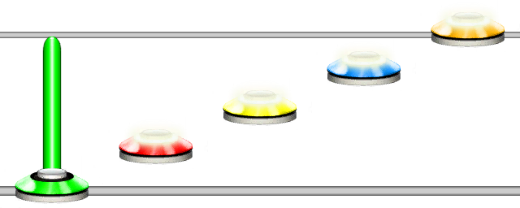

Unsnap Sustain
Aliases
UNSNAP_SUSTAIN, UNSNAP_SUS, UN_SUS US
Overview
The Unsnap Sustain function will unsnap the previous sustain. This means that it will set the position to write notes right after the previous note, rather than after the sustain of the previous note.
This function is functionally identical to using a carat ^ after setting note properties of the previous note.
Note
The default behaviour of sustains is to snap to after it.
Example 1
1{4}^2345
This will unsnap the sustain such that the next notes are placed directly after the green note.
